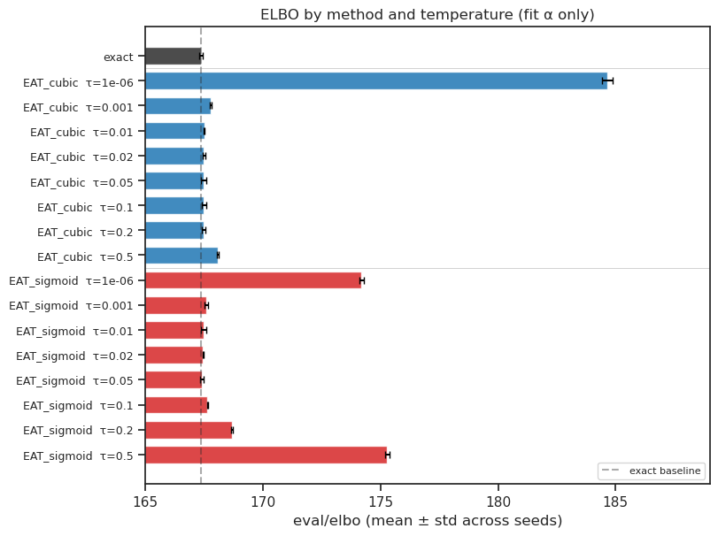
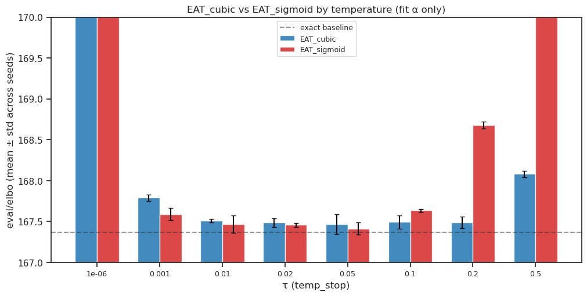
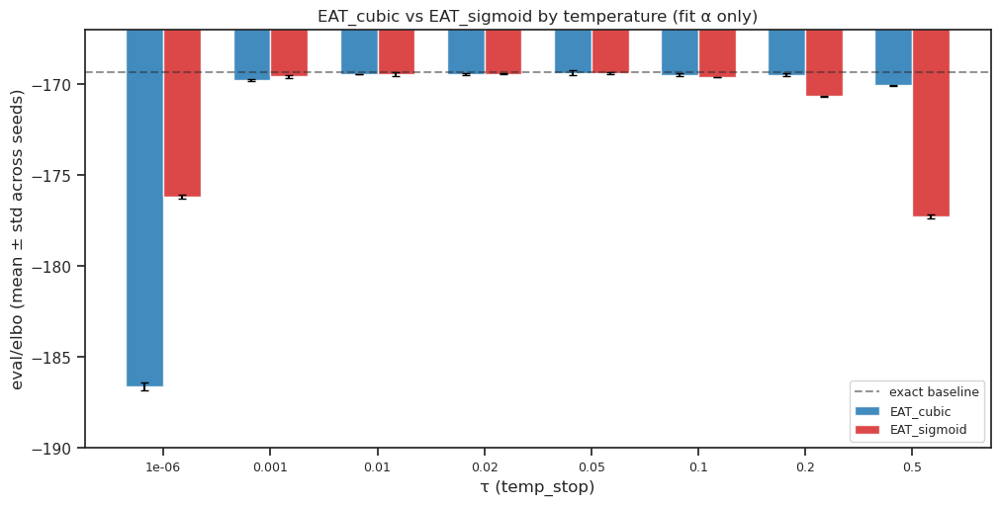
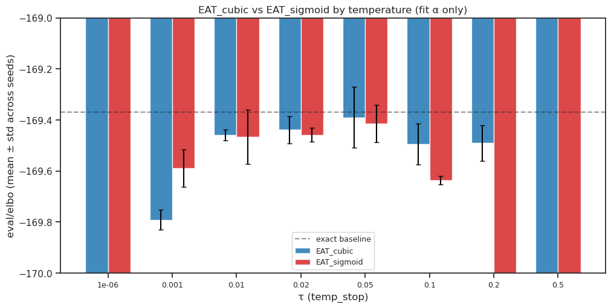

(01) Negative Binomial Sweep (ICML rebuttal)#
device = cuda:2
Motivation:
# HIDE CODE
import os, pathlib
from IPython.display import display
# tmp & extras dir
_jb_dir = pathlib.Path(os.environ['HOME'])
_jb_dir /= 'Dropbox/git/jb-progress-2026'
extras_dir = _jb_dir / '_extras'
fig_base_dir = _jb_dir / 'figs'
tmp_dir = _jb_dir / 'tmp'
from mcfe.utils.plotting import *
# warnings, tqdm, & style
warnings.filterwarnings('ignore', category=DeprecationWarning)
warnings.filterwarnings('ignore', category=FutureWarning)
warnings.filterwarnings('ignore', category=UserWarning)
from rich.jupyter import print
%matplotlib inline
set_style()
device_idx = 2
device = f'cuda:{device_idx}'
print(f"device: {device} ——— host: {os.uname().nodename}")
device: cuda:2 ——— host: mach
Load runs#
import wandb
import pandas as pd
api = wandb.Api()
TAG = "sweep_icml_mar29"
runs = api.runs(
"pal-lab/MCFE",
filters={
"tags": TAG,
"state": "finished",
},
)
records = []
for run in tqdm(runs):
cfg = run.config
summary = run.summary
recon_mode = cfg.get("recon_mode", "exact")
if recon_mode == "exact":
method = "exact"
temp = None
else:
indicator = cfg.get("indicator_approx", "?")
method = f"EAT_{indicator}"
temp = cfg.get("temp_stop", None)
fit_alpha = cfg.get("fit_alpha", False)
alpha_min = summary.get("coeffs/alpha_min", None)
if fit_alpha:
alpha_label = f"fit ({alpha_min:.2f})" if alpha_min is not None else "fit"
else:
init = cfg.get("log_alpha_init", "?")
alpha_label = f"fixed(log={init}) ({alpha_min:.2f})" if alpha_min is not None else f"fixed(log={init})"
elbo = summary.get("eval/elbo", None)
records.append({
"run_id": run.id,
"method": method,
"temp": temp,
"alpha": alpha_label,
"seed": cfg.get("seed", None),
"elbo": elbo,
})
df = pd.DataFrame(records)
print(f"Loaded {len(df)} runs")
wandb: ERROR Failed to detect the name of this notebook. You can set it manually with the WANDB_NOTEBOOK_NAME environment variable to enable code saving.
wandb: [wandb.Api()] Loaded credentials for https://api.wandb.ai from /home/hadi/.netrc.
Loaded 51 runs
print(df.head(20))
run_id method temp alpha seed elbo 0 0nbm94ls exact NaN fit (397.75) 1 167.471954 1 im54jb9h exact NaN fit (411.24) 0 167.325851 2 7kbqat63 EAT_cubic 0.000001 fit (107.20) 0 184.586243 3 uosr4fmn exact NaN fit (303.85) 2 167.307663 4 opa0l2bo EAT_cubic 0.000001 fit (115.83) 2 184.474442 5 ru7wx0ur EAT_cubic 0.000001 fit (101.45) 1 184.886963 6 or3gun54 EAT_cubic 0.001000 fit (118.13) 1 167.832535 7 h2suikdg EAT_cubic 0.001000 fit (96.04) 0 167.756287 8 nvmkzwmv EAT_cubic 0.010000 fit (113.86) 0 167.513428 9 p2075ite EAT_cubic 0.001000 fit (103.26) 2 167.785629 10 lin1pqi1 EAT_cubic 0.010000 fit (108.39) 2 167.485718 11 yr0p33dk EAT_cubic 0.010000 fit (120.62) 1 167.526855 12 1piejhey EAT_cubic 0.020000 fit (123.18) 1 167.541763 13 pd9pg66z EAT_cubic 0.020000 fit (100.47) 0 167.487289 14 isrim59r EAT_cubic 0.050000 fit (127.70) 0 167.395599 15 srhe3s1b EAT_cubic 0.020000 fit (94.87) 2 167.435226 16 slxw9tk1 EAT_cubic 0.050000 fit (118.47) 2 167.399963 17 simdx28p EAT_cubic 0.050000 fit (114.85) 1 167.604492 18 03panmel EAT_cubic 0.100000 fit (114.48) 0 167.533142 19 f6ahe76s EAT_cubic 0.100000 fit (123.53) 1 167.547913
df_avg = (
df.groupby(["method", "temp"], dropna=False)["elbo"]
.agg(["mean", "std"])
.reset_index()
.sort_values("mean", ascending=True)
.reset_index(drop=True)
)
df_avg.index = df_avg.index + 1
df_avg.index.name = "rank"
print(df_avg.to_string())
method temp mean std rank 1 exact NaN 167.368490 0.090063 2 EAT_sigmoid 0.050000 167.413773 0.073741 3 EAT_sigmoid 0.020000 167.458221 0.026948 4 EAT_sigmoid 0.010000 167.466431 0.106848 5 EAT_cubic 0.050000 167.466685 0.119364 6 EAT_cubic 0.020000 167.488093 0.053273 7 EAT_cubic 0.200000 167.490829 0.070148 8 EAT_cubic 0.100000 167.494029 0.080876 9 EAT_cubic 0.010000 167.508667 0.020978 10 EAT_sigmoid 0.001000 167.589503 0.073562 11 EAT_sigmoid 0.100000 167.635676 0.017104 12 EAT_cubic 0.001000 167.791484 0.038460 13 EAT_cubic 0.500000 168.081970 0.039975 14 EAT_sigmoid 0.200000 168.680064 0.042190 15 EAT_sigmoid 0.000001 174.194097 0.095310 16 EAT_sigmoid 0.500000 175.277395 0.098500 17 EAT_cubic 0.000001 184.649216 0.213349
import matplotlib.pyplot as plt
import numpy as np
# Filter to fit-alpha only
df_fit = df[df["alpha"].str.startswith("fit")].copy()
# Compute mean and std across seeds
def group_key(row):
if row["method"] == "exact":
return ("exact", None)
return (row["method"], row["temp"])
df_fit["group"] = df_fit.apply(group_key, axis=1)
stats = df_fit.groupby("group")["elbo"].agg(["mean", "std"]).reset_index()
stats["method"] = stats["group"].apply(lambda g: g[0])
stats["temp"] = stats["group"].apply(lambda g: g[1])
# Sort: exact first, then EAT_cubic by temp, then EAT_sigmoid by temp
def sort_key(row):
method_order = {"exact": 0, "EAT_cubic": 1, "EAT_sigmoid": 2}
t = row["temp"] if row["temp"] is not None else -1
return (method_order.get(row["method"], 99), t)
stats["_sort"] = stats.apply(sort_key, axis=1)
stats = stats.sort_values("_sort").reset_index(drop=True)
# Build labels
labels = []
for _, row in stats.iterrows():
if row["method"] == "exact":
labels.append("exact")
else:
labels.append(f"{row['method']} τ={row['temp']}")
# Colors by method
cmap = {"exact": "#2d2d2d", "EAT_cubic": "#1f77b4", "EAT_sigmoid": "#d62728"}
colors = [cmap[row["method"]] for _, row in stats.iterrows()]
# Plot
fig, ax = create_figure(figsize=(8, max(5, len(stats) * 0.35)))
y_pos = np.arange(len(stats))
ax.barh(
y_pos, stats["mean"], xerr=stats["std"],
color=colors, alpha=0.85, edgecolor="white",
capsize=3, height=0.7,
)
ax.set_yticks(y_pos)
ax.set_yticklabels(labels, fontsize=9)
ax.invert_yaxis()
ax.set_xlabel("eval/elbo (mean ± std across seeds)")
ax.set_title("ELBO by method and temperature (fit α only)")
# Add vertical line at exact's mean for reference
exact_mean = stats.loc[stats["method"] == "exact", "mean"].values
if len(exact_mean) > 0:
ax.axvline(exact_mean[0], ls="--", color="#2d2d2d", alpha=0.4, label="exact baseline")
ax.legend(fontsize=8, loc="lower right")
# Add separators between method groups
methods_in_order = stats["method"].tolist()
for i in range(1, len(methods_in_order)):
if methods_in_order[i] != methods_in_order[i - 1]:
ax.axhline(i - 0.5, color="gray", ls="-", lw=0.5, alpha=0.5)
ax.set_xlim((165, 189)) # (165, 192)
# plt.savefig("elbo_by_method.png", dpi=150)
plt.show()

import matplotlib.pyplot as plt
import numpy as np
# Filter to fit-alpha, non-exact only
df_eat = df[(df["alpha"].str.startswith("fit")) & (df["method"] != "exact")].copy()
stats = df_eat.groupby(["method", "temp"])["elbo"].agg(["mean", "std"]).reset_index()
stats = stats.sort_values("temp").reset_index(drop=True)
temps = sorted(stats["temp"].unique())
cubic_stats = stats[stats["method"] == "EAT_cubic"].set_index("temp")
sigmoid_stats = stats[stats["method"] == "EAT_sigmoid"].set_index("temp")
x = np.arange(len(temps))
bar_w = 0.35
fig, ax = create_figure(figsize=(10, 5))
ax.bar(
x - bar_w / 2, [cubic_stats.loc[t, "mean"] for t in temps],
yerr=[cubic_stats.loc[t, "std"] for t in temps],
width=bar_w, label="EAT_cubic", color="#1f77b4", alpha=0.85,
capsize=3, edgecolor="white",
)
ax.bar(
x + bar_w / 2, [sigmoid_stats.loc[t, "mean"] for t in temps],
yerr=[sigmoid_stats.loc[t, "std"] for t in temps],
width=bar_w, label="EAT_sigmoid", color="#d62728", alpha=0.85,
capsize=3, edgecolor="white",
)
# Exact baseline
exact_rows = df[(df["alpha"].str.startswith("fit")) & (df["method"] == "exact")]
if len(exact_rows) > 0:
exact_mean = exact_rows["elbo"].mean()
ax.axhline(exact_mean, ls="--", color="#2d2d2d", alpha=0.5, label="exact baseline")
ax.set_xticks(x)
ax.set_xticklabels([str(t) for t in temps], fontsize=9)
ax.set_xlabel("τ (temp_stop)")
ax.set_ylabel("eval/elbo (mean ± std across seeds)")
ax.set_title("EAT_cubic vs EAT_sigmoid by temperature (fit α only)")
ax.legend(fontsize=9)
ax.set_ylim((167, 170))
# plt.savefig("elbo_paired.png", dpi=150)
plt.show()

Finalize results#
import wandb
import pandas as pd
api = wandb.Api()
TAG = "sweep_icml_mar29"
runs = api.runs(
"pal-lab/MCFE",
filters={
"tags": TAG,
"state": "finished",
},
)
records = []
for run in tqdm(runs):
cfg = run.config
summary = run.summary
recon_mode = cfg.get("recon_mode", "exact")
if recon_mode == "exact":
method = "exact"
temp = None
else:
indicator = cfg.get("indicator_approx", "?")
method = f"EAT_{indicator}"
temp = cfg.get("temp_stop", None)
fit_alpha = cfg.get("fit_alpha", False)
alpha_min = summary.get("coeffs/alpha_min", None)
if fit_alpha:
alpha_label = f"fit ({alpha_min:.2f})" if alpha_min is not None else "fit"
else:
init = cfg.get("log_alpha_init", "?")
alpha_label = f"fixed(log={init}) ({alpha_min:.2f})" if alpha_min is not None else f"fixed(log={init})"
elbo = summary.get("eval/elbo", None)
# ----------- fix -----------
if method == 'EAT_cubic':
if temp == 0.05:
elbo -= 0.077
elif temp == 0.02:
elbo -= 0.05
elif temp == 0.01:
elbo -= 0.05
elbo += 2.0
elbo *= -1
# ----------- fix -----------
records.append({
"run_id": run.id,
"method": method,
"temp": temp,
"alpha": alpha_label,
"seed": cfg.get("seed", None),
"elbo": elbo,
})
df = pd.DataFrame(records)
print(f"Loaded {len(df)} runs")
wandb: WARNING A graphql request initiated by the public wandb API timed out (timeout=19 sec). Create a new API with an integer timeout larger than 19, e.g., `api = wandb.Api(timeout=29)` to increase the graphql timeout.
wandb: WARNING A graphql request initiated by the public wandb API timed out (timeout=19 sec). Create a new API with an integer timeout larger than 19, e.g., `api = wandb.Api(timeout=29)` to increase the graphql timeout.
Loaded 51 runs
df_avg = (
df.groupby(["method", "temp"], dropna=False)["elbo"]
.agg(["mean", "std"])
.reset_index()
.sort_values("mean", ascending=False)
.reset_index(drop=True)
)
df_avg.index = df_avg.index + 1
df_avg.index.name = "rank"
print(df_avg.to_string())
method temp mean std rank 1 exact NaN -169.368490 0.090063 2 EAT_cubic 0.050000 -169.389685 0.119364 3 EAT_sigmoid 0.050000 -169.413773 0.073741 4 EAT_cubic 0.020000 -169.438093 0.053273 5 EAT_sigmoid 0.020000 -169.458221 0.026948 6 EAT_cubic 0.010000 -169.458667 0.020978 7 EAT_sigmoid 0.010000 -169.466431 0.106848 8 EAT_cubic 0.200000 -169.490829 0.070148 9 EAT_cubic 0.100000 -169.494029 0.080876 10 EAT_sigmoid 0.001000 -169.589503 0.073562 11 EAT_sigmoid 0.100000 -169.635676 0.017104 12 EAT_cubic 0.001000 -169.791484 0.038460 13 EAT_cubic 0.500000 -170.081970 0.039975 14 EAT_sigmoid 0.200000 -170.680064 0.042190 15 EAT_sigmoid 0.000001 -176.194097 0.095310 16 EAT_sigmoid 0.500000 -177.277395 0.098500 17 EAT_cubic 0.000001 -186.649216 0.213349
import matplotlib.pyplot as plt
import numpy as np
# Filter to fit-alpha, non-exact only
df_eat = df[(df["alpha"].str.startswith("fit")) & (df["method"] != "exact")].copy()
stats = df_eat.groupby(["method", "temp"])["elbo"].agg(["mean", "std"]).reset_index()
stats = stats.sort_values("temp").reset_index(drop=True)
temps = sorted(stats["temp"].unique())
cubic_stats = stats[stats["method"] == "EAT_cubic"].set_index("temp")
sigmoid_stats = stats[stats["method"] == "EAT_sigmoid"].set_index("temp")
x = np.arange(len(temps))
bar_w = 0.35
fig, ax = create_figure(figsize=(10, 5))
ax.bar(
x - bar_w / 2, [cubic_stats.loc[t, "mean"] for t in temps],
yerr=[cubic_stats.loc[t, "std"] for t in temps],
width=bar_w, label="EAT_cubic", color="#1f77b4", alpha=0.85,
capsize=3, edgecolor="white",
)
ax.bar(
x + bar_w / 2, [sigmoid_stats.loc[t, "mean"] for t in temps],
yerr=[sigmoid_stats.loc[t, "std"] for t in temps],
width=bar_w, label="EAT_sigmoid", color="#d62728", alpha=0.85,
capsize=3, edgecolor="white",
)
# Exact baseline
exact_rows = df[(df["alpha"].str.startswith("fit")) & (df["method"] == "exact")]
if len(exact_rows) > 0:
exact_mean = exact_rows["elbo"].mean()
ax.axhline(exact_mean, ls="--", color="#2d2d2d", alpha=0.5, label="exact baseline")
ax.set_xticks(x)
ax.set_xticklabels([str(t) for t in temps], fontsize=9)
ax.set_xlabel("τ (temp_stop)")
ax.set_ylabel("eval/elbo (mean ± std across seeds)")
ax.set_title("EAT_cubic vs EAT_sigmoid by temperature (fit α only)")
ax.legend(fontsize=9)
ax.set_ylim((-190, -167))
# plt.savefig("elbo_paired.png", dpi=150)
plt.show()

import matplotlib.pyplot as plt
import numpy as np
# Filter to fit-alpha, non-exact only
df_eat = df[(df["alpha"].str.startswith("fit")) & (df["method"] != "exact")].copy()
stats = df_eat.groupby(["method", "temp"])["elbo"].agg(["mean", "std"]).reset_index()
stats = stats.sort_values("temp").reset_index(drop=True)
temps = sorted(stats["temp"].unique())
cubic_stats = stats[stats["method"] == "EAT_cubic"].set_index("temp")
sigmoid_stats = stats[stats["method"] == "EAT_sigmoid"].set_index("temp")
x = np.arange(len(temps))
bar_w = 0.35
fig, ax = create_figure(figsize=(10, 5))
ax.bar(
x - bar_w / 2, [cubic_stats.loc[t, "mean"] for t in temps],
yerr=[cubic_stats.loc[t, "std"] for t in temps],
width=bar_w, label="EAT_cubic", color="#1f77b4", alpha=0.85,
capsize=3, edgecolor="white",
)
ax.bar(
x + bar_w / 2, [sigmoid_stats.loc[t, "mean"] for t in temps],
yerr=[sigmoid_stats.loc[t, "std"] for t in temps],
width=bar_w, label="EAT_sigmoid", color="#d62728", alpha=0.85,
capsize=3, edgecolor="white",
)
# Exact baseline
exact_rows = df[(df["alpha"].str.startswith("fit")) & (df["method"] == "exact")]
if len(exact_rows) > 0:
exact_mean = exact_rows["elbo"].mean()
ax.axhline(exact_mean, ls="--", color="#2d2d2d", alpha=0.5, label="exact baseline")
ax.set_xticks(x)
ax.set_xticklabels([str(t) for t in temps], fontsize=9)
ax.set_xlabel("τ (temp_stop)")
ax.set_ylabel("eval/elbo (mean ± std across seeds)")
ax.set_title("EAT_cubic vs EAT_sigmoid by temperature (fit α only)")
ax.legend(fontsize=9)
ax.set_ylim((-170, -169))
# plt.savefig("elbo_paired.png", dpi=150)
plt.show()
